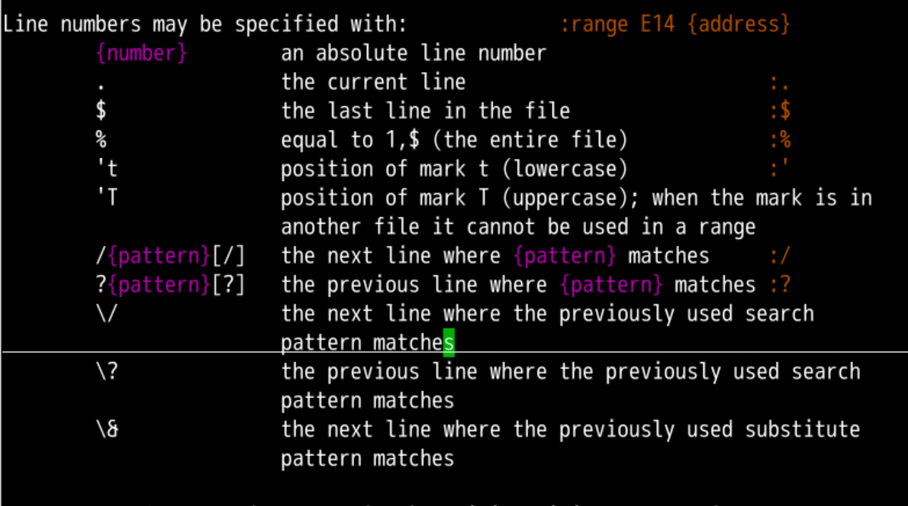
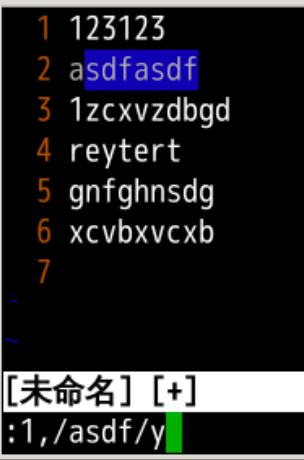
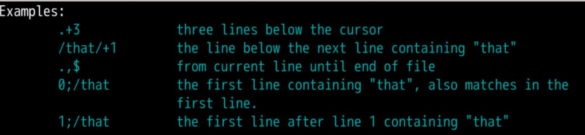

范围控制
回忆上节课内容🤔
- 这次我们主要就是看命令行
- 首先是选择一个
[range]这个范围 - 然后进行相应的操作
:11,30d:2,7y
- 还可以指定寄存器
:3,40y a:"aP
- 甚至可以用一行就复制或者剪切内容
:12,30t50，12-30行复制到50行:3,6m30, 3-6行移动到30行
- 这个
[range]还有什么说法吗？🤔

查看手册📕

:h range可以查看相应的细节
范围定义
{number}，比如1,4,7等具体数字:3就是去第3行
.当前行1,.从第1行到当前行
$.,$从当前行到最后1行1,$从第1行到最后1行:1,$d
%所有行- 相当于
1,$ :%d
- 相当于
匹配相关的范围
/{pattern}[/]向下查找到的匹配{pattern}的那行- 比如下图中，光标在第1行
:1,/asdf.*/y就会把从第1行到asdf行的内容复制进入剪切板

?就是向上搜索- 如果光标在第7行
:?asdf?,3d- 就是向上搜索到asdf的匹配行也就是第2行
- 删除的就是2-3行
例子展示

.+3- 光标之下
3行
- 光标之下
/that/+1- 向下找到匹配
/that/的那行的下1行
- 向下找到匹配
.,$- 从当前行到末行
0;/oeasy/- 从第
1行往后找到的第一个oeasy，包括第一行
- 从第
1;/oeasy/- 从第
1行,开始往后找的第一个oeasy，不包括第一行
- 从第
- 我们经常用到/、?、,
- 什么才是正确的输入方法呢？
小细节
- 输入/
- 右手小指往下点一下
- 注意这个时候右手的食指还在j的凸起上
- 只挪动小指
- ,
- 右手中指往下点一下
- 注意这个时候右手的食指还在j的凸起上
- 只挪动中指
- 保持基本手型基本架子
- 坐姿或站姿保证尾闾中正
- 调整呼吸
- ?
- 左手小指按下Shift
- 右手小指按下/
- :
- 左手小指按下Shift
- 右手小指按下;
- 这种左右配合感觉非常美妙
- Shift 尽量都左右配合
- 以后可以强制练习一下
- 比如
http://oeasy.org:用小指/也用小指的，左右配合.用的是无名指- 无名指也叫药师指
- 感觉多用的话可以提高灵感
总结
- 有了这个
range、address我们可以做很多事情- 跳转
:44
- 跳转
- 复制和剪切
1,3d3,$y%d o
- 配合搜索
/oeasy/,$y5;/oeasy/d
- 其实还有一种
address- 是
mark标记
- 是
- 还记得
mark标记 是什么意思？🤔 - 下次再说 👋